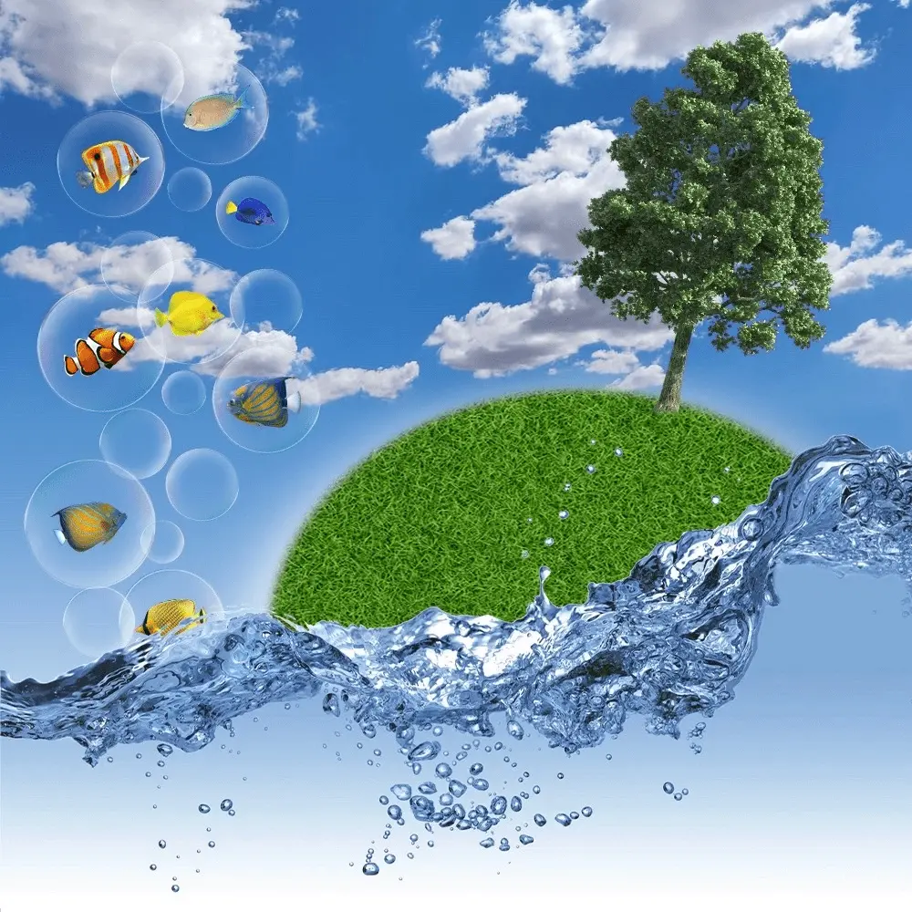

Frutiger Aero Aesthetic
The Emergence of Frutiger Aero Design
As the digital world evolved in the early 2000s, the aesthetics of web design experienced a significant shift that gave rise to the unique and visually appealing Frutiger Aero Aesthetic. Blending together glossy textures, humanism, nature elements, and beautiful typography, this new wave of design fits perfectly within the era of Web 2.0 which prioritizes interactivity and user-generated content.
Credited to the work of top-notch designers from Asadal Design, Microsoft, and Apple, the Frutiger Aero style has left an indelible mark on how websites present themselves to users, with a keen focus on usability and visual appeal.
Coined by Sofi Lee working at the CARI institute in 2017, the term "Frutiger Aero" resurfaced in popular culture with the hashtag #frutigeraero on TikTok in 2022 (and with many Frutiger Aero Effects or and with many filters on social media).
There is also a large Frutiger Aero community on Reddit, on the dedicated subreddit r/FrutigerAero, where members discuss and share insights on the aesthetic and various topics, including the famous Frutiger Aero soap from Palmolive, or where to find a Frutiger Aero fish lamp.
There is also a large Frutiger Aero community on Reddit, on the dedicated subreddit r/FrutigerAero, where members discuss and share insights on the aesthetic and various topics, including the famous Frutiger Aero soap from Palmolive, or where to find a Frutiger Aero fish lamp.
The Frutiger Family includes different subgenres:
- Dark Aero
- DORFic
- Fotonight Web
- Frutiger Aero
- Frutiger Aurora
- Frutiger Eco
- Frutiger Metro
- Helvetica Aqua Aero
Key Motifs that Define Frutiger Aero Design
- Glossy Textures: One of the most distinguishing features of Frutiger Aero design is its use of glossy finishes for various UI elements such as buttons, icons, and banners. This added an extra layer of sophistication to the overall design, standing out in comparison to its Web 1.0 counterparts.
- Humanism: The humanist approach to design was emphasized through natural shapes and organic forms. Rounded corners became prevalent, embracing essential functionality while maintaining a visually appealing flow.
- Use of Nature: Websites adopting the Frutiger Aero design often incorporated natural elements such as leaves or swirl patterns, suggesting growth, movement, and energy. It was a refreshing change from boxier designs, reflecting a more intuitive approach to web design.
- Bokeh, Bubbles, and Glass: Background images often featured soft bokeh effects or bubble-like patterns that brought a light, airy feel to the design. Some UI components even took on translucent glass-like appearances, further contributing to the sleek aesthetic.
- Frutiger Fonts: The use of Frutiger typefaces created by Adrian Frutiger is one of the defining characteristics of this design approach, with their legibility and humanist qualities giving websites a more professional and approachable look. Bold and clean text made content easier to read and absorb, improving user experience.
- Auroras: Another recurring visual motif was the use of aurora-inspired gradients. Blues, greens, yellows, and oranges swept across backgrounds or within buttons, adding depth and diversity to the design landscape.
The Influence of Color in Frutiger Aero Design
In order to create visually stunning and harmonious designs, many Frutiger Aero websites opted for a specific color palette that comprised of blue, green, yellow, white, and orange. These colors, in various shades and combinations, were used to evoke positive emotions, make the digital space inviting, and contribute to user satisfaction.
The widespread usage of blue as a central color is rooted in its ability to convey confidence and reliability. Being calming and easy on the eyes, it became a default choice among designers for eliciting trust from users. Meanwhile, other colors like green and yellow helped establish the connection to nature, foster creativity, and portray optimism
Applications of Frutiger Aero
Unlike with the Y2K aesthetic of the Late-1990s and early 2000s, which movies, TV, music, and video games of a science-fiction persuasion were based around, there was less overlap between this aesthetic and popular culture. It was and is mainly a corporate design philosophy. The Hexatron aesthetic, with its focus on dark surfaces, UI and the huge emphasis on blue color, eventually edged out Frutiger Aero to become more popular.
Media
Television
Legacy of Frutiger Aero Design
Although the Frutiger Aero style may not be at the forefront of web design trends today, its influence can still be felt throughout the digital realm. Aesthetic preferences have shifted over the years, with newer trends such as minimalism and flat design taking center stage. However, many of the fundamental principles promoted by Frutiger Aero continue to resonate: human-centered design, seamless user experience, and a visually enticing environment.
In conclusion, the Frutiger Aero design, born out of the creativity of Asadal Design, Microsoft, and Apple, has left an indelible mark on the web design world. Its unique combination of glossy textures, humanist elements, and nature-inspired patterns have shaped not just the visual appearance but also the overall user experience in the Web 2.0 era. And though design trends will continue to evolve, the impact of this approach is still felt today through its core principles and everlasting contributions to digital aesthetics.